KIWI
The
Single-board
Satellite
MANUAL
Description
Kiwi is a small and compact satellite that combines multiple sensors, radios and data storage solutions on a single printed circuit board (PCB). It is designed to be accessible, programmable, and easily customizable through custom expansion boards. Kiwi is primarily designed for tabletop experiments, to be used as a tool in STEM education.
This document introduces Kiwi, and the plug-and-play functions it provides out-of-the-box.
Contact information can be found at the end of the manual if you’re interested in any further information or have questions.
WARNINGS & Safety Measures Electrical devices connected to Kiwi should not be near any liquids and/or high temperature environments (above 85°C, 185°F) as it may cause internal or external damage to the Kiwi, your device connected to the Kiwi, and/or injury to yourself. Kiwi is designed primarily to be powered over USB (5V), consuming around 250 mW of power.
Kiwi is an exposed PCB, with electronic components sensitive to static discharge. Use caution while handling.
TABLE OF CONTENTS
Materials / Equipment Required
Hardware
- The Kiwi single-board satellite (provided)
- A USB-micro B cable (not provided) to power the Kiwi
- A Wi-Fi enabled personal computer (desktop, laptop, MacBook or iMac, etc., not provided) to view data coming from the Kiwi
- Raspberry Pi Debug Probe (Optional)
Software
- CoolTerm
- Kiwi Plotter
- Thonny IDE for MicroPython (Optional)
Get to know your Kiwi
Kiwi is a single-board satellite. Meaning, it is a printed-circuit board (PCB) with various components attached to it, performing different functions. The following sections will introduce you to various parts of a Kiwi - some that are visible, and some that are not.
The Hardware
The interactive diagram below shows the front and back of the Kiwi PCB. Click the rectangle around a component to see its designation, part number, and description.
The central component of the Kiwi is the Raspberry Pi RP2350B microcontroller, which serves as the “brain” of Kiwi, managing its operations in processing sensor data and handling communications.
Kiwi contains a 2 MiB (1 MiB = 1024 KiB = 1024 × 1024 bytes) flash memory chip, which is used to store the software program executed by the microcontroller.
Additional peripherals can be stacked on top of Kiwi through the 60-pin expansion sockets (TOP1 and TOP2) and plugs (BOT1 and BOT2).
Kiwi also contains a variety of sensors, including an accelerometer, gyroscope, magnetometer, barometer, temperature sensor, air quality index (AQI) and humidity sensor, and light sensors on each side of the board.
Kiwi has a built-in Wi-Fi (2.4 GHz) radio for wireless communication, and a USB port for power and configuration updates.
There is also an on-board micro-SD card slot for additional data storage.
The Firmware
Firmware is the software that runs on the microcontroller on-board the Kiwi, controlling its hardware functions and defining its operations. Kiwi comes preloaded with a firmware that collects data from various sensors and broadcasts them over Wi-Fi.
The firmware is upgradable (requires a computer and the Raspberry Pi Debug Tool). Custom firmware can be developed and flashed onto the Kiwi, allowing for custom behavior and functionality. A MicroPython interpreter is also available for the Kiwi, allowing users to write and execute Python code directly on the device.
Kiwi Plotter
Kiwi Plotter is a free, cross-platform software that allows you to visualize, and collect data from various sensors on your Kiwi over Wi-Fi. Kiwi Plotter is available for Windows, macOS (ARM-based) and Linux (as an AppImage).
Windows Installation
Download Kiwi Plotter Setup <Version> x64.zip.
Navigate to the location of the ZIP archive, and double-click on the file to open it.
The archive contains a single file Kiwi Plotter Setup <Version>-x64.exe.
Double-click on this file to open it.
You will be presented with the Windows SmartScreen filter dialog, since the Kiwi Plotter installer is not signed by a digital signature.
Click on “More Info”, then
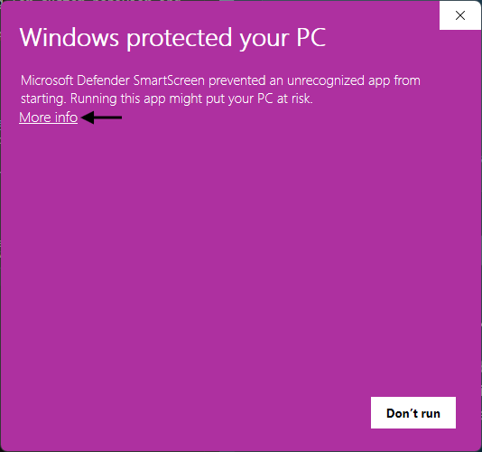
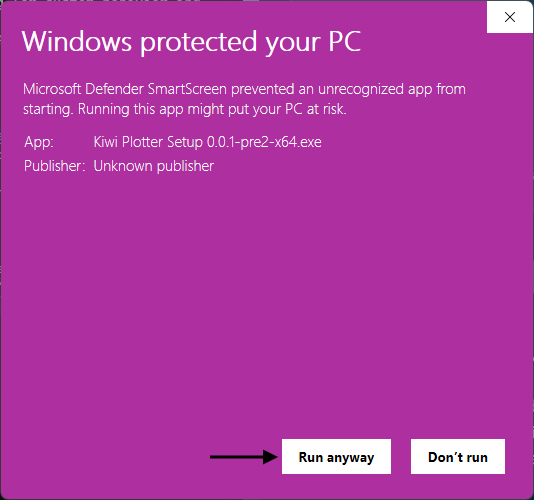
Upon installation, the Kiwi Plotter will start automatically. Kiwi Plotter can be opened later from the Start ( ) menu.Safety As long as it is downloaded from here, it should be completely safe to install and execute. The source code for the plotter is available here. Validate the SHA-256 checksum of the downloaded ZIP archive against the checksum posted with the release.
macOS Installation
To install Kiwi Plotter on macOS, download Kiwi Plotter-<Version>-arm64.dmg, and open the DMG file.
Follow the steps in
to complete the installation.
Kiwi Plotter can be opened later from the Applications folder, or from Launchpad.
Powering up your Kiwi
- Locate the USB port on your computer.
-
Plug in the USB-A side of the cable into the computer’s USB Port (). Connect the micro-B side into the Kiwi (as shown in ).
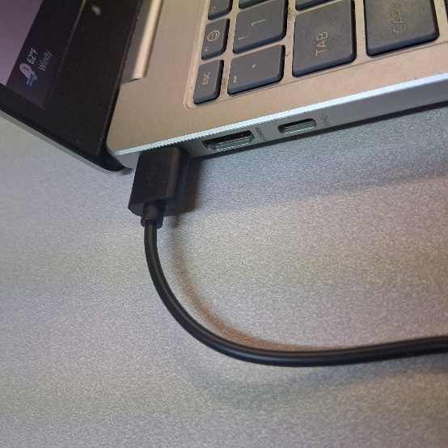
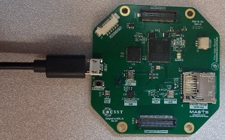
At this point, the Kiwi is turned on, and by default, creates an open Wi-Fi access point called
kiwi-ap. Kiwi broadcasts various sensor measurements over Wi-Fi at UDP port8099. Thekiwi-apnetwork should show up in the list of available Wi-Fi networks on your computer. Connect to thekiwi-apnetwork to start receiving data from the Kiwi.
Note If you are using a MacBook or iMac, or a Windows PC without an accessible USB type-A port, you may need a USB-C to USB-A adapter to connect the USB cable to your computer. Optionally, you can also use a USB-C to micro-B cable to connect the Kiwi directly to your Mac or PC without an adapter.
Troubleshooting
- Wait up to a minute for the Wi-Fi network to show up.
- If the default
kiwi-apnetwork does not show up, disconnect and reconnect the device.- If the problem persists,
- Short the
PWLED_ENjumper to verify both the red (5V power) and green (3.3V power) LEDs are lighting up.- Write to us at kiwi@uml.edu.
Receiving Data from your Kiwi
By default, Kiwi transmits data through the self-hosted kiwi-ap Wi-Fi access point.
To receive measurements from your Kiwi, you will need to use a Wi-Fi-enabled computer.
After the data visualization tool, Kiwi Plotter, has been set up on your computer, connect your computer to the kiwi-ap Wi-Fi access point.
 Once your computer is connected to the
Once your computer is connected to the kiwi-ap network access point, the device should show up in the Kiwi Plotter software.
Wi-Fi Network If you have changed the name of the Wi-Fi access point that your Kiwi is broadcasting, look for that name in the list of available devices in the plotter instead of
kiwi-ap. If you have configured your Kiwi to connect to a different Wi-Fi network, make sure your computer is connected to the same network to receive data from the Kiwi.
 Clicking on the device in the list will open up a new tab in the plotter, showing real-time sensor measurements from the Kiwi.
Clicking on the device in the list will open up a new tab in the plotter, showing real-time sensor measurements from the Kiwi.
 The various sensor measurements are shown in individual panels in the plotter ().
Measurements from the accelerometer, gyroscope and magnetometer show three axes of data, corresponding to the x, y and z axes of the device.
These plots also show the magnitude of these measurements, calculated as \(\sqrt{x^2 + y^2 + z^2}\).
The pressure, temperature, and inferred altitude measurements are shown in their individual panels.
These panels can be adjusted in size, and rearranged within the plotter tab to customize the layout.
The Y-axis limits can also be adjusted for each panel by clicking the gear icon in the top-right corner of the panel, and entering new limits in the “Y-Axis Limits” section.
The various sensor measurements are shown in individual panels in the plotter ().
Measurements from the accelerometer, gyroscope and magnetometer show three axes of data, corresponding to the x, y and z axes of the device.
These plots also show the magnitude of these measurements, calculated as \(\sqrt{x^2 + y^2 + z^2}\).
The pressure, temperature, and inferred altitude measurements are shown in their individual panels.
These panels can be adjusted in size, and rearranged within the plotter tab to customize the layout.
The Y-axis limits can also be adjusted for each panel by clicking the gear icon in the top-right corner of the panel, and entering new limits in the “Y-Axis Limits” section.
 The viewer also shows a real-time 3D visualization of the orientation of the device, based on the accelerometer and magnetometer measurements.
This visualization is approximate, and does not (yet) account for the drift in the gyroscope measurements, so it may not be perfectly accurate.
Instantaneous values of the various sensor measurements can be viewed by hovering over the plots, or by clicking on the “Data Inspector” button in the top-right corner of the plotter tab.
The viewer also shows a real-time 3D visualization of the orientation of the device, based on the accelerometer and magnetometer measurements.
This visualization is approximate, and does not (yet) account for the drift in the gyroscope measurements, so it may not be perfectly accurate.
Instantaneous values of the various sensor measurements can be viewed by hovering over the plots, or by clicking on the “Data Inspector” button in the top-right corner of the plotter tab.
 An individual, more detailed 3-D visualization of the device orientation is also available in a separate tab in the plotter, accessible through the “3D” button on the device list.
An individual, more detailed 3-D visualization of the device orientation is also available in a separate tab in the plotter, accessible through the “3D” button on the device list.
 The data from the Kiwi can also be recorded and exported as a CSV file for offline analysis.
To start recording, click the “Start” button in the top-left corner of the device plot tab.
After recording has started, use the “Stop” button to stop recording, and the “Export” button to download the recorded data as an Excel spreadsheet.
Data from various sensors are recorded in separate sheets within the spreadsheet, with timestamps for each measurement.
The data from the Kiwi can also be recorded and exported as a CSV file for offline analysis.
To start recording, click the “Start” button in the top-left corner of the device plot tab.
After recording has started, use the “Stop” button to stop recording, and the “Export” button to download the recorded data as an Excel spreadsheet.
Data from various sensors are recorded in separate sheets within the spreadsheet, with timestamps for each measurement.
Configuring your Kiwi
Kiwi exposes a simple configuration interface over universal serial asynchronous receiver-transmitter (UART), better known as a ‘serial port’.
This serial port is accessible to the computer connected to Kiwi over the USB port.
The configuration interface uses text commands to configure the Kiwi.
The built-in firmware supports changing the Wi-Fi settings, and updating the unique identifier of the Kiwi (Kiwi#XXXX by default).
Connecting to Kiwi Serial Port
CoolTerm
CoolTerm is a free software that provides an interface to communicate with a device over the serial port. Depending on your operating system, use the links in the following table to get the correct version of CoolTerm. For most users, the first (Windows users) and second (Mac users) should be sufficient.
CoolTerm download options by platform and CPU architecture.
| Computer | Operating System | Architecture | Link |
|---|---|---|---|
| Windows PC / Laptop | Windows 64-bit | x86_64 |
Link |
| MacBook / iMac | macOS (Universal) | x86_64 / arm64 |
Link |
| Windows PC / Laptop (before 2010) | Windows 32-bit | x86 |
Link |
| Windows PC / Laptop with Snapdragon Chip | Windows ARM64 | arm64 |
Link |
| Linux PC / Laptop | Linux | x86 / x86_64 |
32-bit 64-bit |
| Raspberry Pi | Linux | armv7 / arm64 |
32-bit 64-bit |
Windows PC
Installation
- Download the version of CoolTerm compatible with your Windows PC from .
- Navigate to the location of the downloaded
.zipfile. - Extract the files from the downloaded
.ziparchive.- Right click on the
.ziparchive to open the context menu and select the “Extract All…” option.
- Click the “Extract” button in the extraction dialog.
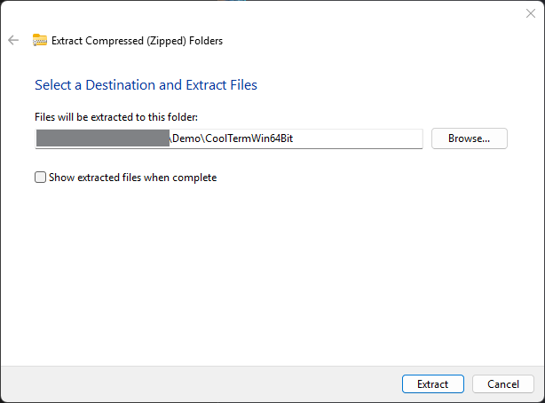
- Navigate into the extracted
CoolTermWin64Bitdirectory, and launch theCoolTermapplication executable (.exe).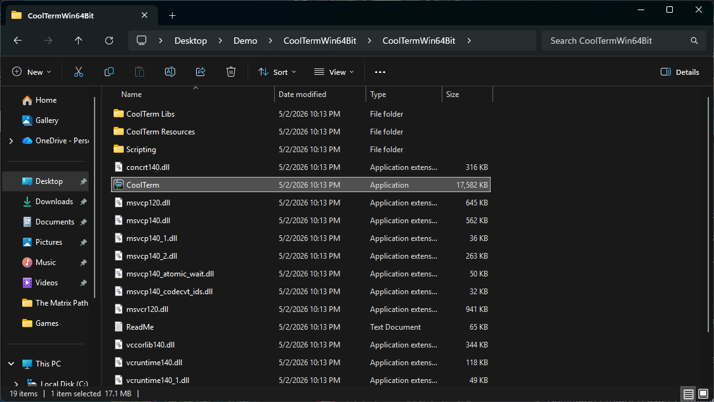
- Right click on the
Usage
- Upon launching CoolTerm, you will be prompted to set the preferences for CoolTerm. Use default preferences.
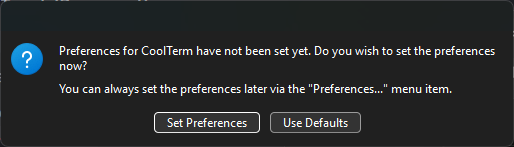
- After CoolTerm opens, click on “▼” on the left of the bottom bar.
- Select a serial port under “Port”. Your computer may have multiple serial connections available depending on which peripherals are connected to it.
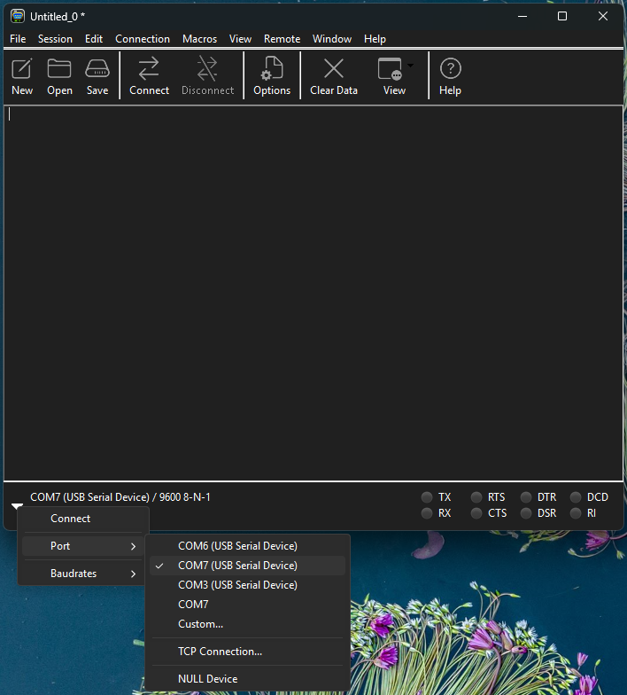
- Click “Connect” to connect to the Kiwi serial port.
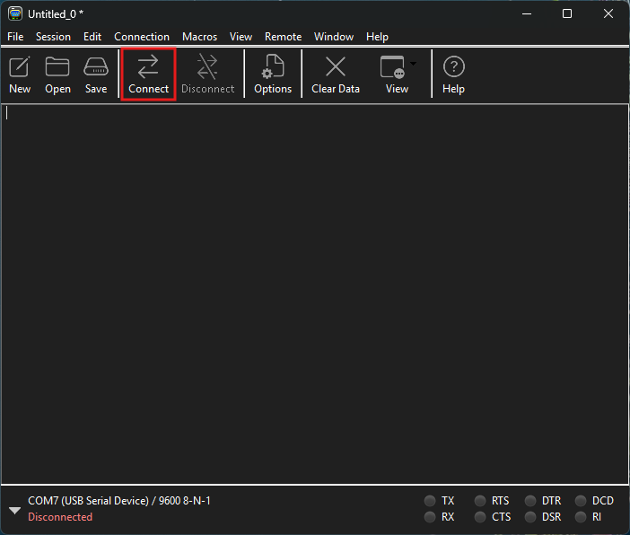
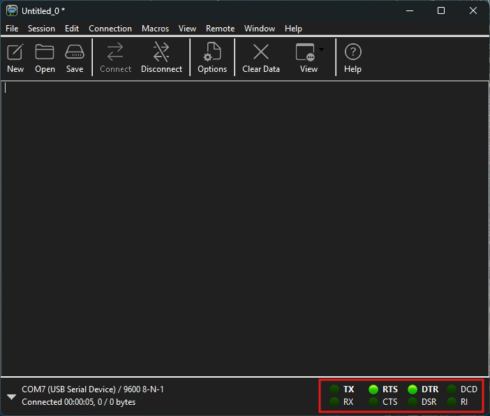
- Hit the Enter key. You should see a prompt that looks like
>, which indicates you are connected to the Kiwi serial console, and your Kiwi is ready to receive commands.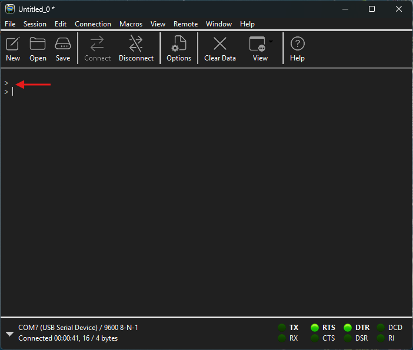
- If the
>does not show up and you have multiple serial devices under “Ports”, switch to a different port, connect to it, and hit Enter. - Type
helpand hit Enter to see the list of available commands.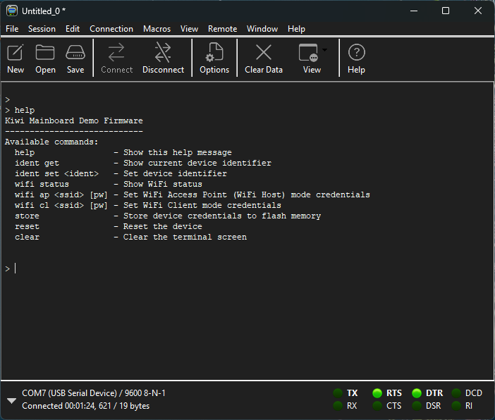
Identify the Kiwi COM Port The COM port presented by Kiwi can be identified in the
Device Managerprogram in case multiple COM ports are present. To open Device Manager, first click on the ‘Start’ ( ) button on your desktop, or the Windows key on your keyboard. Then, type in ‘device manager’, and ‘Device Manager (Control Panel)’ should show up in the search results.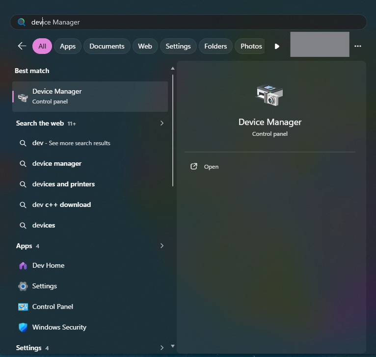
Open Device Manager, and navigate toPorts (COM & LPT) in the device tree.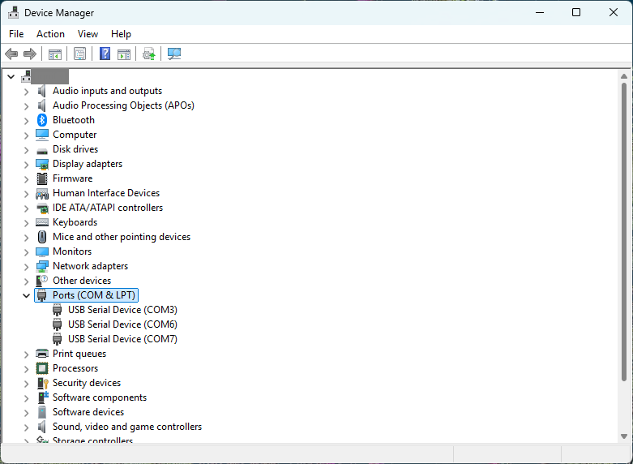
Then, right click on a COM port under thePorts (COM & LPT) devices and select Properties.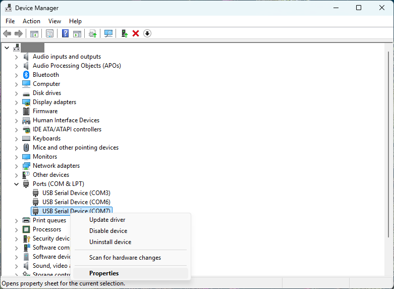
In the device properties dialog box, navigate toDetails , and selectBus reported device description under theProperty dropdown. A Kiwi will report itself asKiwi Mainboard Rev. B.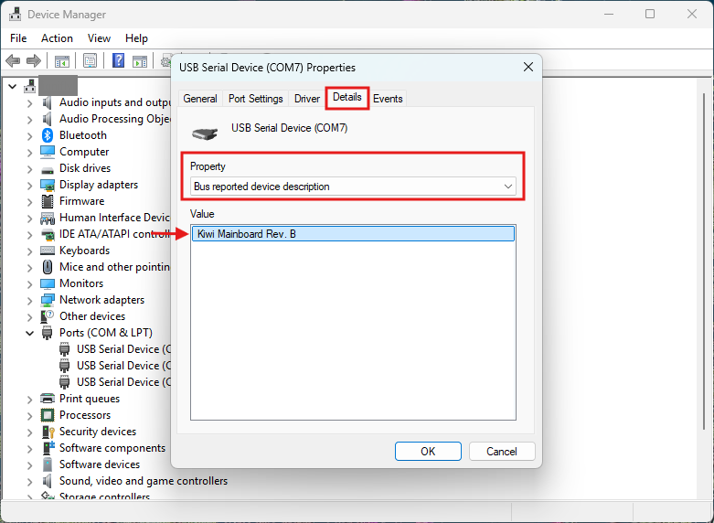
Note the COM port number once the Kiwi is found. Hit ‘OK’ to close the Properties dialog box, and close Device Manager.
MacBook / iMac
Installation
- Download the macOS version of CoolTerm from .
- Open the downloaded
CoolTermMac.dmgfile, and drag the CoolTerm application to your Applications folder.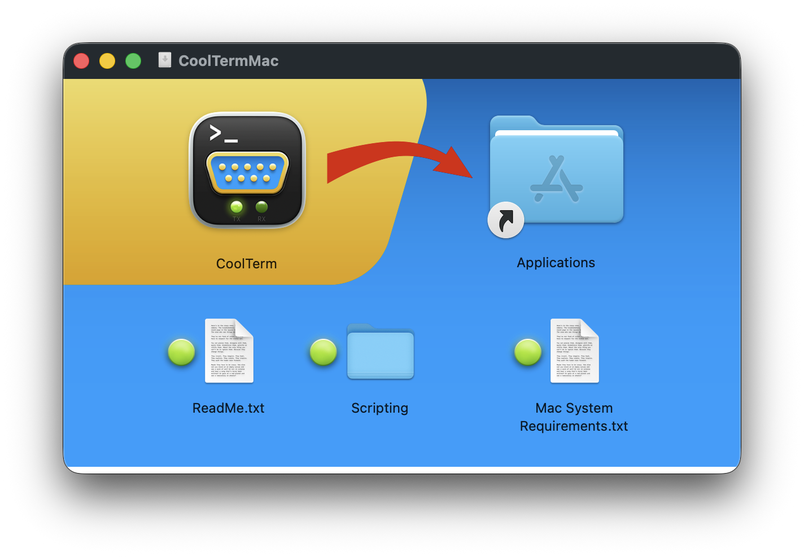
Usage
- Open CoolTerm from the Applications folder.
On first launch, you will be prompted to set up the preferences for CoolTerm.
Use the default settings (press “Use Defaults” button).
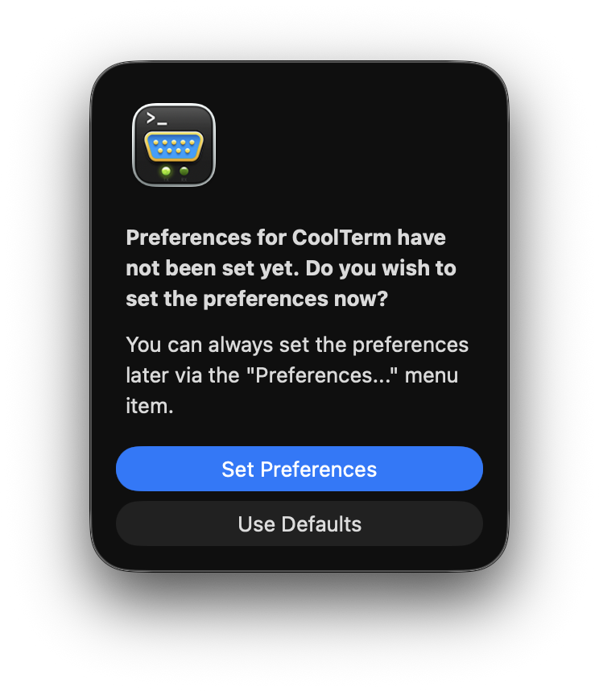
- After CoolTerm opens, click on “▼” on the left of the bottom bar.
- Select the serial port that corresponds to your Kiwi (e.g.,
usbmodem2025_0011) under “Port”. - In the “▼” menu, click “Connect” to connect to the Kiwi serial port.
- Hit the Return key. You should see a prompt that looks like
>, which indicates you are connected to the Kiwi serial console, and your Kiwi is ready to receive commands. - Type
helpand hit Return to see the list of available commands.
Configuration Commands
Kiwi serial commands are strings, identified by one or more command keywords. These command keywords are selected to be small, memorable mnemonics of the operation they perform. Most commands are made of one or two keywords, separated by a single space.
Some commands also accept input parameters, some of which may be optional.
Required input parameters are indicated by <> symbols, and optional parameters are indicated by [].
The inputs are positional, meaning the position after the command keywords determines which parameter is set by a passed value.
Commands are executed when the Enter or Return key is pressed.
Available configuration commands
| Command | Description | Inputs |
|---|---|---|
help |
Shows a help message describing what commands are available | – |
ident get |
Get the currently set identity for the Kiwi | – |
ident set <ID> |
Set a new identity | ID: New identity string (12 characters max.) |
wifi status |
Current status of the Wi-Fi connection, and broadcast data rate if a connection has been established | – |
wifi ap <ssid> [pw] |
Kiwi creates a Wi-Fi access point | ssid: Wi-Fi access point name (32 characters max.)pw: Optional password for the access point (32 characters max.) |
wifi cl <ssid> [pw] |
Kiwi joins a Wi-Fi network | ssid: Name of the Wi-Fi network (32 characters max.)pw: Optional password for the Wi-Fi network (32 characters max.) |
store |
Update the identity, or Wi-Fi configuration of Kiwi. This operation causes the device to reset. | – |
reset |
Trigger a software reset of the device | – |
clear |
Use ANSI escape sequences to clear the terminal screen. This may not work on CoolTerm on Windows. | – |
help
The help command prints the available commands in the console.
Identity Commands
Each Kiwi board stores a unique identity string (12 characters) on board.
ident get
Typing in ident get in the console and pressing Enter or Return prints the currently set identity string on the console.
ident set
The ident set command takes a single parameter, the new identity to be set.
For example, if you want to set the identity string to MyKiwi, execute the following command:
> ident set MyKiwi
Note, this does not update the identity string immediately.
Execute the store command for the update to take effect.
Identity strings must be alphanumeric, and can not contain a space.
wifi status
The wifi status command does not take any parameters.
This command outputs the current status of the Wi-Fi connection.
For example, the Kiwi with device ID Kiwi#0002, set up in access point (Kiwi creates the Wi-Fi network) called kiwi_ap (this is what the Wi-Fi network shows up as in your PC/laptop/phone) without a password, returns the following output on wifi status command:
> wifi status
Device ID: Kiwi#0002
WiFi Credentials:
Mode: Access Point
SSID: kiwi-ap
Open network
Data rate: 23.195875 kbps, Packet rate: 123.711334 pkt/s
If the Kiwi is unable to create the access point, or join a Wi-Fi network, it will report WiFi not ready instead of showing a data rate.
wifi ap
The wifi ap command configures the Kiwi to host a Wi-Fi hotspot for you to connect to.
Kiwi broadcasts its measurements over this Wi-Fi hotspot.
This command takes two parameters:
ssid: The service-set identifier (SSID) is the name of the Wi-Fi hotspot Kiwi creates.pw: An optional password for the Wi-Fi hotspot. Ifpwis not provided as an input, Kiwi will host an open network that can be joined without entering a password.
For example, executing kiwi ap kiwi-network will configure the Kiwi to set up an open network hotspot that will show up as kiwi-network on your device.
Executing kiwi ap kiwi-private SecurePassword will configure Kiwi to set up a network hotspot kiwi-private that will require SecurePassword for a device to join that network.
wifi cl
The wifi cl command configures the Kiwi to connect to an open, or WPA/WPA2 protected network.
Most home/private networks use this form of authentication, where a passsword is entered to join the network.
The eduroam network uses more complex authentication methods, and Kiwi can not join such a network.
wifi cl command accepts the SSID (required) and password (optional) parameters.
To connect Kiwi to MyHomeWiFi secured by MySecurePassword, execute the following command:
> wifi cl MyHomeWiFi MySecurePassword
Omit the password if you are connecting to an open network.
Wi-Fi SSID and Password Formatting Wi-Fi SSID is an alphanumeric string of up to 32 characters, supporting characters a–z, A–Z, 0–9, dashes (-) and underscores (_). Due to the positional parameter inputs to
wifi apandwifi clcommands, any space in the SSID will cause the part before the space to be interpreted as the SSID and the part after the space as the password. Special characters are not supported.Wi-Fi passwords are at most 32 characters long.
store
The store command stores any changes to Kiwi configuration (identity or Wi-Fi configuration), and resets the device for the settings to take effect.
reset
The reset command triggers a software reset of the Kiwi.
The store command uses this trigger to reload the new configuration.
clear
The clear command sends a set of characters to the terminal to clear any previous commands and their outputs.
This command may not work as intended in CoolTerm on Windows.
Advanced Usage
This section covers advanced topics for users who want to get more out of their Kiwi.
Datasheet for Kiwi is provided below.
Programming your Kiwi
Kiwi supports MicroPython out-of-the-box. MicroPython has been compiled for the Kiwi, and is available from here.
Flashing the MicroPython Firmware
- Download the
micropython_<MicroPythonVersion>_kiwi_mb_revB0.uf2file to your PC. - Keep the USB micro-B cable plugged into the Kiwi, but not into the PC.
- With the
BOOTSELbutton held down (possibly with a small tool like a screwdriver), insert the cable into the PC. - Kiwi should show up as a removable storage device. Copy the downloaded
.uf2firmware to it. - At this point, the removable storage should automatically be removed and the Kiwi should reboot.
MicroPython on your Kiwi
Use the Thonny IDE to write MicroPython code and execute it on your Kiwi. Thonny allows you to store code on your Kiwi and run it when the Kiwi is powered on.
Kiwi Plotter will not work with MicroPython Installing MicroPython to Kiwi will remove the pre-loaded firmware Kiwi came with. This will break the data transmission functionality Kiwi previously offered, and your Kiwi will not transmit any data over Wi-Fi to Kiwi Plotter by default.
Data Format used by Kiwi
Kiwi broadcasts measurement packets over UDP on port 8099.
Currently, this is not configurable in the on-board Kiwi firmware, or the Kiwi Plotter, so any data broadcast to the plotter will have to be broadcast on this port.
Kiwi broadcasts data packets that are fixed-size 24-byte binary structures. All multi-byte values are little-endian, or least-significant-byte first. This is in contrast to the typical network byte order (big-endian), since most consumer hardware, including the Kiwi, is little-endian.
Default Packet Layout
| Bytes | Size | Field | Description |
|---|---|---|---|
| 0–1 | 2 B | Type | Measurement type code (u16) |
| 2–13 | 12 B | Data | Measurement payload (layout varies by type) |
| 14–21 | 8 B | Timestamp | Microseconds since device start (u64) |
| 22–23 | 2 B | CRC | CRC-16/XMODEM over bytes 0–21 (u16) |
Measurement Types
The type field identifies which sensor produced the data and how the 12-byte payload is laid out ().
Table of type-field values identifying which sensor produced a data packet.
| Type | Code | Bytes 2–13 | Units |
|---|---|---|---|
| Accelerometer | 0xACC1 |
X (f32), Y (f32), Z (f32) |
g |
| Gyroscope | 0x6E50 |
X (f32), Y (f32), Z (f32) |
°/s |
| Magnetometer | 0x9A61 |
X (f32), Y (f32), Z (f32) |
mG |
| Temperature | 0x7E70 |
Label (8 B ASCII, null-padded), Value (f32) |
°C |
| Barometer | 0xB480 |
Temperature (f32), Pressure (f32), Altitude (f32) |
°C / hPa / m |
| Humidity / AQI | 0xF0AC |
Temperature (f32), Humidity (f32), AQI (f32) |
°C / % / — |
| Light | 0x1A2B |
Label (8 B ASCII, null-padded), Value (f32) |
lux |
| Device ID | 0x1D1D |
ID string (12 B ASCII, null-padded) | — |
The Temperature and Light types include an 8-character ASCII label (null-padded to 8 bytes, bytes 2–9) that identifies the specific sensor, followed by the value as an f32 at bytes 10–13.
The Device ID type carries a 12-character null-padded ASCII string identifying the device (e.g. kiwi#0001), with no numeric value.
AQI Data Due to the closed-source nature of the AQI calculation algorithm (BSEC) provided by Bosch Sensortech, it has not been integrated into the pre-loaded Kiwi firmware. AQI data is reported as raw resistance measurement from the gas sensor, heated up to 300°C.
Data Types
u8: Unsigned 8-bits of data (a byte). Also known asunsigned charoruint8_tin the C programming language. The Python equivalent is abyte.u16: Unsigned 16-bits of data (2 bytes). Also known asunsigned shortoruint16_tin C. Python does not have a direct equivalent of this type. Use thestructmodule to unpack au16to anint, and vice-versa.u64: Unsigned 64-bits of data (8 bytes). Also known asunsigned long longoruint64_tin C. Python does not have a direct equivalent of this type.f32: A 32-bit, IEEE-758 floating point number. Also known asfloatin C.floatin Python is usually 64-bits long, but MicroPython usually uses 32-bit floating point numbers by default.
Integrity Check
The last 2 bytes of every packet carry a CRC-16/XMODEM checksum computed over the first 22 bytes. Packets with a CRC mismatch should be discarded.
CRC-16/XMODEM A cyclic redundancy check (CRC) is an error-detecting code commonly used in digital networks and storage devices to detect accidental changes to digital data. Blocks of data entering these systems get a short check value attached, based on the remainder of a polynomial division of their contents. On retrieval, the calculation is repeated and, in the event the check values do not match, corrective action can be taken against data corruption. The specific polynomial used in the CRC-16/XMODEM algorithm, also known as the CRC-16 CCITT algorithm, is \(x^{16} + x^{12} + x^{5} + 1\), or
0x1021, and the accumulator is initialized to0x0000.
Custom Data Packets
The reference implementation of the Kiwi software transmits data in 24-byte packets. If your Kiwi is flying as part of the Kiwi-50 experiment, the following are recommended to ensure successful data acquisition:
- Broadcast UDP packets on port
8099. - Adhere to the 24-byte packet size.
- Maintain the CRC-16 bytes at the end of the packet.
- Transmit the ID packet with your unique ID. No data will be routed until this ID is received (Kiwi-50 experiments). It is recommended to broadcast the ID packet at a regular interval, at most 4 times every minute (15 seconds interval), to ensure the device is identified quickly without lowering data throughput with too many ID packets.
- Use a custom ID (
u16). There are over 60,000 to choose from. - Implement a way to track the order of packets. UDP does not guarantee transmission or ordering of packets.
Rust on your Kiwi
The Rust Programming Language is the primary intended programming language for a Kiwi.
Rust is a memory-safe language that avoids many pitfalls of traditional system programming languages, such as C and C++, without any performance overhead.
Rust also allows for powerful patterns, such as the asynchronous programming model (using keywords async and await, and an asynchronous executor).
The asynchronous programming model is especially useful on the Kiwi, which is a resource-constrained embedded system and cannot run a full operating system that would take care of scheduling various tasks (reading multiple sensors, collecting the data, transmitting them over Wi-Fi, while waiting for USB commands for configuration updates, and more).
Kiwi leverages the embassy framework to achieve this, which supports the Raspberry Pi RP2350B microcontroller very well.
The pre-loaded firmware is written in Rust, and leverages embassy to implement a cooperative multi-tasking environment.
However, Rust development is more advanced and would be more difficult to introduce in this manual. Source code for the firmware pre-loaded in your Kiwi is available here. Documentation for the firmware is available on GitHub pages.
Kiwi-50
Kiwi-50 is an upcoming high-altitude balloon flight opportunity for Kiwis. Two self-contained experiments, each carrying up to 50 Kiwis, will be launched from Fort Sumner, New Mexico, USA. These balloons will fly at the float altitude (100,000 ft or 30 km typical) for at least two hours before coming down. If you want to participate in the Kiwi-50 flight with your Kiwi and have an experiment in mind, please use the Feedback form to contact us. Additionally, you can reach out at kiwi@uml.edu.